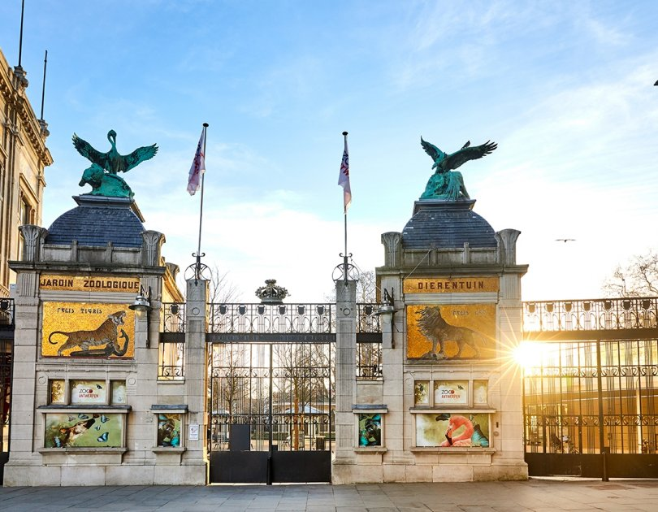
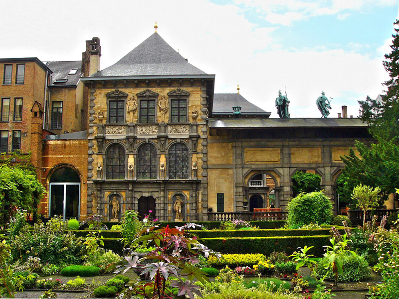
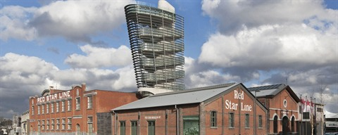
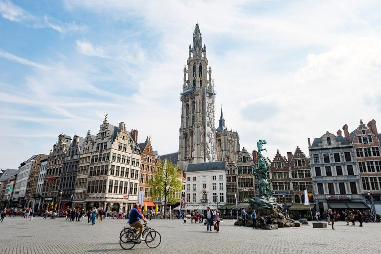
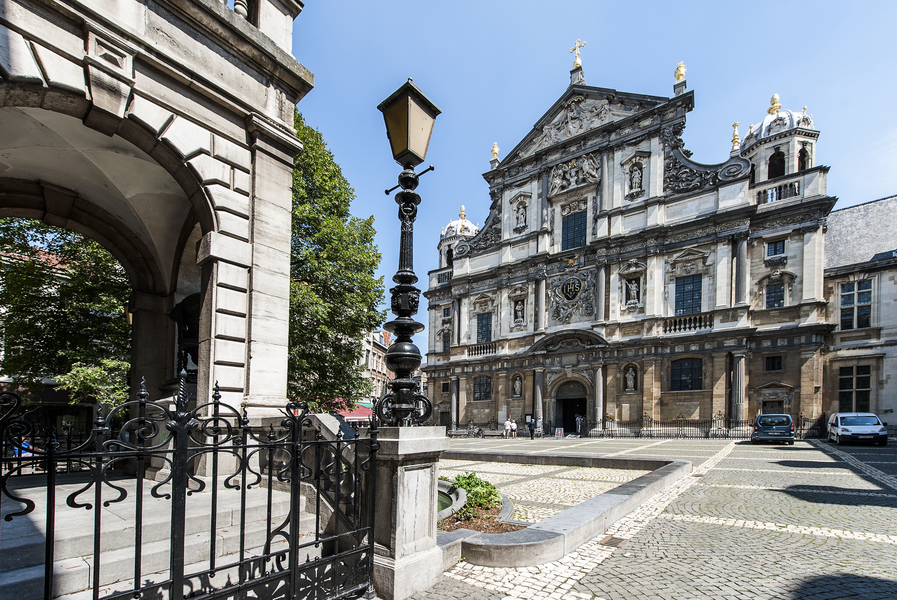
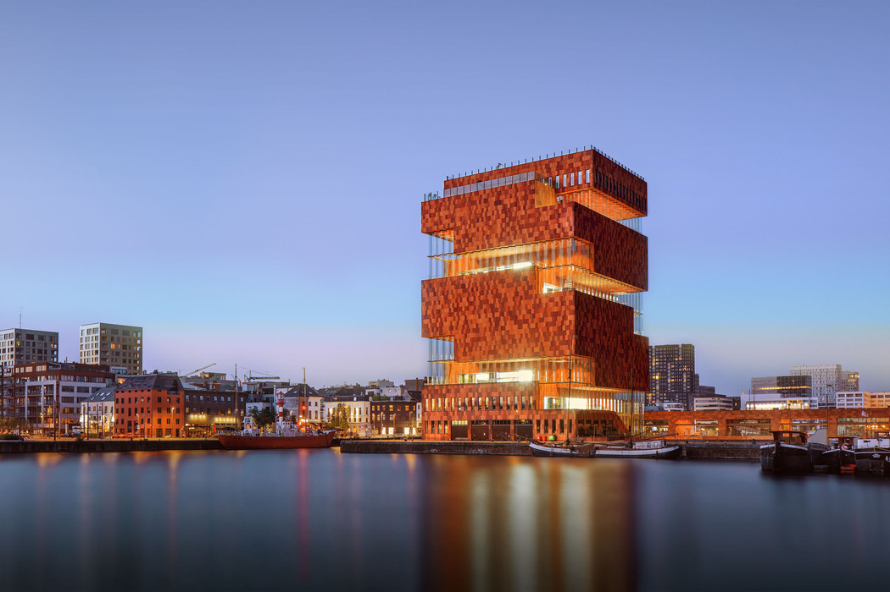

Overnachten in Antwerpen
Enkele tips om te overnachten in Antwerpen.
Best things to do in Antwerp
The second city of Belgium and home to Sanne and Pieter, Antwerp is an obvious choice to visit. :) Antwerp is known as the diamond capital of the world and the diamond industry plays an important role in the economy of the city and has done throughout its history. During the 16th Century the city was one of the most important places, and one of the most important ports in all of Europe. The city suffered greatly in the Second World War but still retains many of its medieval charm and landmarks. Today, the city has a reputation for art and fashion.
Here you can find some nice things to do while you are staying in Antwerp:
Admire Antwerp Central Station

Looking at a train station may not be one of the best things to do in many cities but in Antwerp, it is an absolute must. The Gothic architecture of the building’s impressive exterior will take your breath away and the main hall is equally splendid. The station is one of the city’s most treasured landmarks and has been rated as one of the world’s top five most beautiful train stations.
Explore the historic Antwerp Zoo
Antwerp Zoo was founded in 1843 and makes a great day out when you are tired of looking at museums and architecture. The zoo may be one of the oldest in the world but the facilities are modern and world class with state of the art enclosures and breeding programmes. The Zoo is situated right next to the Central Station.
Pop into Ruben’s House
Rubenshuis is the former home of the painter Pieter Paul Rubens. The home was built by Rubens himself as both a place to live and also as a studio for him to work in. The building was in a bad way prior to restorative work that began in 1937 but with some careful work, the building has now returned to its former glory. As well as furniture from the period that the painter lived here, the house also shows off many pieces of his artwork.
Visit the Red Star Line Museum
The Red Star Line Museum exhibits the stories of many migrants who left Belgium, mainly for America, via the Red Star Line ships. Most of the passengers embarked from the very building in which the museum is housed. The exhibits are very engaging and use actual photographs and other personal items to vividly tell the story of the crossing from Belgium to the States. The observation tower, which was formerly the building’s chimney, has great views of the surrounding area.
Worship the Cathedral of Our Lady (Onze-Lieve-Vrouw kathedraal)
The tallest cathedral in the Low Countries is one that can be appreciated both from outside and inside. It took 169 years to build before being completed in the year 1521. The spire is visible from many areas of the city and rarely fails to take one’s breath away. The interior is a striking blend of Baroque decor and Ruben’s artwork.
St. Charles Borromeo Church + Hendrik Conscience square (Sint-Carolus Borromeuskerk + Hendrik Conscience plein)
St. Charles Borromeo Church is a church in central Antwerp, located on the Hendrik Conscience square. It was built in 1626 as the Jesuit church of Antwerp, which was closed in 1773. It was rededicated in 1779 to Saint Charles Borromeo. The church was formerly known for 39 ceiling pieces by Rubens that were lost in a fire when lightning struck the church on 18 July 1718. The church's interior still hosts various Rubens' paintings.
Explore Het Steen

Het Steen is the name of a small but pretty castle just on the side of the river ‘Schelde’ in Antwerp. The castle dates back to the early 13th Century and makes for some great photographs. Also worth photographing is the odd statue outside the castle of Lange Wapper, a large peeping tom character who is exposing his codpiece to passers by. There is nothing to be seen inside the castle itself but the nearby maritime museum MAS, with its collection of historic barges, is worth a look while in the area.
Visit the unique MAS Museum
If you have had your fill of historic sights within Antwerp (and there are a lot worth seeing) then you should visit the modern MAS museum. MAS is a museum that does explore the history of Antwerp and its role as an important port city but also features temporary cutting edge exhibits that are regularly changing. Temporary exhibits on display at the time of writing include one exploring different forms of body art. Whilst visiting the museum it is well worth taking the elevators to the open top roof for breathtaking views of the city. There is no charge for this.
Relax in the town square

Antwerp’s Grote Markt or town square dates back to the 16th Century and is a beautiful example of architecture from this period. The town hall is the centerpiece and is built in Renaissance and Gothic styles. The statue at the centre of the square is of Brabo, a legendary giant slayer, and dates back to 1887.
Enjoy a beer
We Belgians enjoy a good beer, and Antwerp has a lot of charming bars where you can enjoy the specialties. We really like ‘De Muze’ (Melkmarkt 15), where you can have a drink and enjoy jazz concerts. ‘Café Kiebooms‘ (De Coninckplein 18) has a retro vibe and also offers nice food. In ‘De Vagant’ (Reyndersstraat 25) you can have a ‘jenever’, a Belgian liquor that exists in a lot of different flavours (like cactus, blood orange, apple, passion fruit, and many many more). This is also the place where we had our first date, so it holds a special place in our hearts!
Eat Belgian Fries
We saved the best for last! As you already know, there is no such thing as “French Fries”, since we Belgians invented the fries. Antwerp is a great place to experience the Belgian take on fries. Order them with mayonnaise or ‘stoofvleessaus’ (a sauce made with brown beer and pieces of meat) and add an extra piece of meat (also veggie options) on the side.